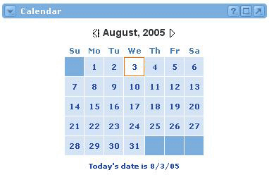

The main view of the Calendar is a launching pad into more detailed views of your calendar. At the bottom of the Calendar, today's date is displayed. Clicking this link will take you into today's detailed "daily" view of the Calendar. Clicking on any other date displayed in the calendar will open the "daily" view for that date. From the daily view, you will have access to all calendar functions.
To navigate dates in a future or previous month, use the arrow icons next to the current month and year.
